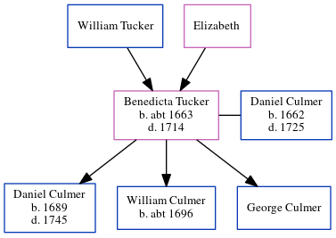

Benedicta Culmer (née Tucker) c1663 - 1714
[ Home ] | [ Calendar ] | [ Surnames Index ] | [ Census Index ] | [ Family History ]The child of William Tucker and Elizabeth, Benedicta Tucker, the 8 times great-grandmother of Nigel Horne, was born in Womenswold, Kent, England c. 1663, was baptized there on Aug 27, 1663 and married Daniel Culmer (with whom she had 3 children: Daniel, William and George) in Preston, Kent, England on Sep 19, 1683.
She died in 1714 in Kent1 and was buried in Stourmouth, Kent, England on Apr 21, 1714.
Parents
Children
- Daniel was born in 1689
- William was born c. 1696
Citations
- Kent, England, Tyler Index to Parish Registers, 1538-1874 Online publication - Provo, UT, USA: Ancestry.com Operations, Inc., 2010. This collection was indexed by Ancestry World Archives Project contributors.Original data - Frank Watt Tyler. The Tyler Collection. Canterbury, Kent, England: The Institute of Herald
Family Tree
Generated by ged2site. Last updated on Jun 11, 2024